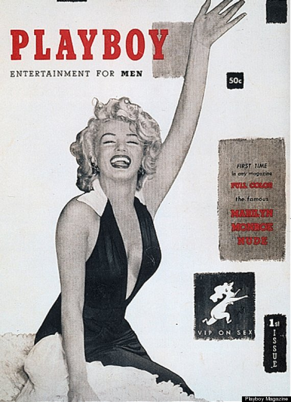

Dec 1953 Hugh Hefner establishes Playboy With borrowed money and a heart full of hope, 27-year-old Hugh Hefner launched his debut Playboy Magazine, with “Sweetheart of the Month” Marilyn Monroe gracing the cover in December of 1953. Now, Marilyn did not exactly pose nude for Hefner himself for this issue. He actually bought the rights of the nude photos from a local calendar store in Chicago and put the 44 pages of the first issue of Playboy Magazine together in his own home. Hugh Hefner did not put his name nor an issue date on the first 50,000 issues of Playboy Magazine. The first issue, in December 1953, was undated, as Hefner was unsure there would be a second. He produced it in his Hyde Park kitchen. The first centerfold was Marilyn Monroe, although the picture used originally was taken for a calendar rather than for Playboy. The first issue sold out in weeks. Known circulation was 53,991. The cover price was 50¢. Copies of the first issue in mint to near mint condition sold for over $5,000 in 2002.
